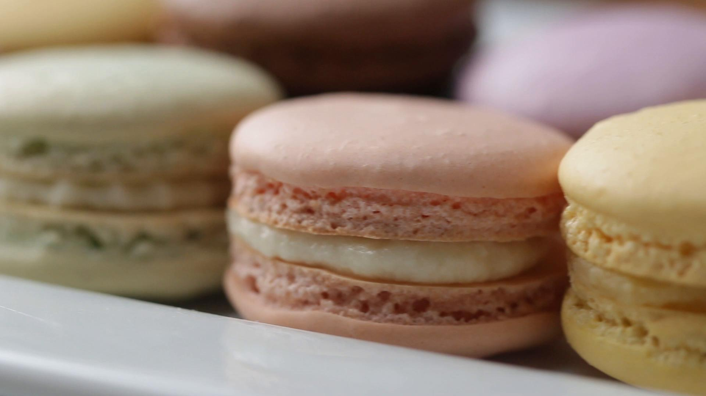

Chocolate Cake
A one bowl chocolate cake recipe that is quick,
easy, and delicious! Updated with gluten-free,
dairy-free, and egg-free options!

Irish Coffee Cake
Inspired by an Irish Coffee, this is a chocolate
stout cake with an easy Bailey’s Irish Cream frosting.
The ideal cake for St. Patrick’s Day or an Irish
themed birthday cake!

Strawberry ShortCake
New & improved recipe! This recipe for
strawberry shortcake is homemade with
fluffy whipped cream, juicy strawberries,
and sweet biscuits.

Blueberry Muffin
You only need one bowl to make this easy blueberry
muffins recipe with blueberries, flour, sugar,
vanilla, and vegetable oil. We’ve been making
these muffins for years and are always happy
that we did.

Carrot Muffin
These easy muffins have a wholesome, mildly
sweet flavor with a moist texture that’s cake-
like; this recipe is definitely a keeper!

Chocolate Chip Muffin
They’re large and in charge, bursting
with flavor, and are topped with a sweet
sparkly sugar crunch.

Apple Strudel
This easy Apple Strudel recipe is filled with
cinnamon, brown sugar, raisins and more! It’s a
crispy, flaky pastry that’s easy to make and
downright delicious.

Banana Bread
With its super-moist texture, buttery banana
and brown sugar flavors, and incredibly soft
crumb, this is my favorite banana bread recipe.

Cinnamon Rolls
This cinnamon roll recipe makes classic,
home-style cinnamon rolls. They’re fluffy,
soft, and topped with vanilla glaze.

Crosissants
They’re light and airy, and so buttery,
with a hint of sweetness and a little bit
of a yeasty, stretchy texture. There’s
nothing else quite like a croissant!

Macarons
Unlike American macaroons, French macarons
are two crunchy-on-the-outside and chewy-on
-the-inside meringue discs traditionally
filled with ganache, buttercream, or jam.